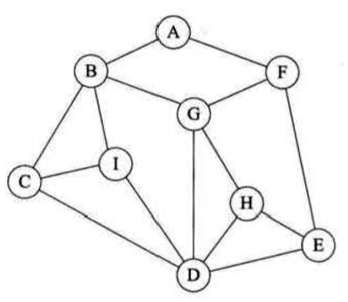
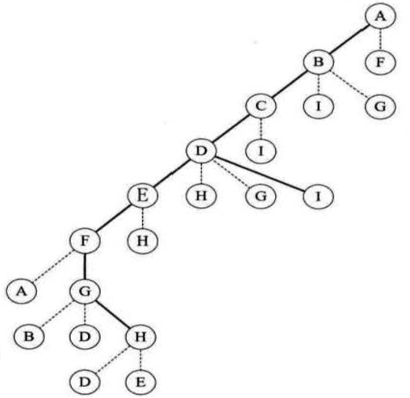
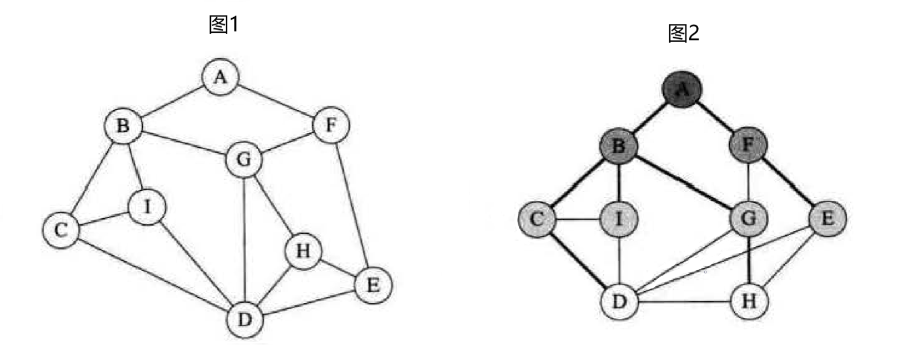

概述 @
图的遍历算法是求解图的连通性的问题、拓扑排序和关键路径等算法的基础。
然而，图的遍历比树复杂，因为图的任一顶点都可能和其余的顶点相邻接，所以在访问了某个顶点之后，可能沿着某条路径搜索，又回到该顶点上，为了避免同一个顶点被多次访问，遍历图的过程中，必须记下每个被访问过的顶点。
可以设置一个辅助数组，将初始值置为 0，访问过后置为 1，根据搜索方向，有两条常用遍历路径，深度优先遍历与广度优先遍历。
深度优先遍历 @

根据上图所示，深度优先遍历每次访问该顶点的第一个邻接点(假设为最左边的顶点)，那么从 A 出发，访问 B，然后再访问 C，再访问 D，再访问 E，访问 F，从 F 出发再进行访问时发现 A 已经被访问，所以 F 访问 G，然后从 G 出发，发现 B、D 已经被访问，所以访问 H，从 H 出发，发现 D、E 都被访问过，所以退回到 G，然后退回到 F，退回到 E，再次退回到 D，然后从 D 出发访问 I，从 I 出发发现邻接点也都被访问过，所以退回 D，再退回 C、B，最后退回 A，这样就完成了所有顶点的遍历。 遍历的过程其实相当于一棵二叉树，如下图所示，这样的树也被称为深度优先遍历生成树

深度优先遍历(DFS)类似于树的先序遍历，遍历过程如下：
- 从图中某个顶点 v 出发，访问 v。
- 找出刚访问过的顶点的第一个未被访问的邻接点，访问该顶点。以该顶点为新顶点，重新重复此步骤，直至刚访问过的顶点没有未被访问的邻接点为止。
- 返回前一个访问过的且仍有未被访问的邻接点的顶点，找出该顶点的下一个未被访问的邻接点，访问该结点。
算法实现 @
深度优先遍历是一个递归过程，附设一个访问标志数组 visited[n],其初值为”false”，一旦某个顶点被访问，则其相应的分量置为”true”,算法步骤如下：
- 从图中某个顶点 v 出发，访问 v 并置 visited[v]的值为 true。
- 依次检查 v 的所有邻接点 w，如果 visited[w]为”false”,再从 w 出发进行递归遍历，直到图中所有顶点都被访问过。
连通图遍历算法描述
bool visited[MVNum]; //标志数组，初始为"false"
void DFS(Graph,G,int v){
cout << v;
visited[v] = true;
//NextAdjVex(G,v,w)，表示v相对于w的下一个结点，w>=0表示存在邻接点
//FistAdjVex(G,v)，表示v的第一个邻接点
for(w=FirstAdjVex(G,v);w>=0;w=NextAdjVex(G,v,w)){
if(!visited[w])
DFS(G,w);
}
}
非连通图需要重新找一个未被访问的顶点作为起始点，然后重复 DFS 的过程，直至所有顶点都被访问过，非连通图的遍历算法如下：
void DFSTraverse(Graph G){
for(v=0;v<G.vexnum;++v){
visoted[v] = false; //初始化
}
for(v=0;v<G.vexnum;++v){
if(!visited[v]) DFS(G,v);
}
}
采用邻接矩阵表示图的深度优先搜索遍历 @
void DFS_AM(AMGraph G,int v){
cout << v;
visited[v] = true;
for(w=0;w<G.vexnum;w++){
if((!G.arc[v][w]!=0) && (!visited[w]))
DFS_AM(G,w);
}
}
采用邻接表表示图的深度优先搜索遍历 @
void DFS_AL(ALGraph G,int v){
cout << v;
visited[v]=true;
p = G.vertices[v].firstarc; //p指向v的边链表的第一个边结点
while(p!=NULL){
w = p->adjvex; //w是v的邻接点
if(!visited[w]) DFS_AL(G,w);
p = p->nextarc;
}
}
邻接矩阵表示图时，查找每个顶点的邻接点的时间复杂度为$O(n^2)$，其中 n 为图中顶点数。
邻接表做图的存储结构时，查找邻接点的时间复杂度为 O(e)，e 为图中边数。由此，当以邻接表做存储结构时，DFS 时间复杂度为 O(n+e).
广度优先遍历 @

假设需要遍历图 1，将图 1 调整位置后可以得到图 2，我们发现图 1 其实是一个层次的关系，因此广度优先遍历就是层序进行遍历，从 A 点出发，访问 B 和 F，然后从 B 出发访问 C、I 和 G，再从 F 出发访问 E(由于 G 已经被访问，所以不需要再访问 G)，从 C 出发访问 D，D 已经被访问，所以不需要从 I 出发再访问 D，然后从 D 出发访问 H，H 已被访问，所以从 E 出发不需要再次访问 H，这样图就遍历完成了。
广度优先搜索(BFS)遍历类似于树的层序遍历，遍历过程如下：
- 从图中某个顶点 v 出发，访问 v。
- 依次访问 v 的各个未曾访问过的邻接点。
- 分别从这些邻接点出发依次访问他们的邻接点，并使”先被访问的顶点的邻接点”先于”后被访问的顶点的邻接点”被访问，重复步骤 3，直至所有已被访问的顶点的邻接点都被访问到。
算法实现 @
广度优先遍历的特点是：尽可能先对横向进行搜索，先访问的顶点其邻接点也先被访问，所以算法实现时需要引进队列保存已被访问过的顶点，算法步骤如下：
-
从图中某个顶点 v 出发，访问 v，并置 visited[v]的值为 true，然后将 v 进队。
-
只要队列不为空，则重复以下操作
- 队头顶点 u 入队
- 依次检查 u 的所有邻接点 w，如果 visited[w]的值为 false，则访问 w，并置 visited[w]的值为 true，然后将 w 进队。
连通图算法描述
void BFS(Graph G,int v){
cout << v;
visited[v] = true;
InitQueue(Q); //初始化队列Q
EnQueue(Q,v); //v顶点进队
while(!QueueEmpty(Q)){ //队列非空
DeQueue(Q,u); //u保存出队后的队头元素
for(w=FirstAdjVex(G,u); w>=0; w=NextAdjVex(G,u,w)){ //w为u的邻接点
if(!visited[w]){
cout << w;
visited[w] = true;
EnQueue(Q,w);
}
}
}
}
算法分析 @
每个顶点最多进一次队列，使用邻接矩阵存储时，时间复杂度为$O(n^2)$。
使用邻接表存储时，时间复杂度为 O(n+e)，BFS 与 DFS 的差别在于顶点的访问顺序不同。